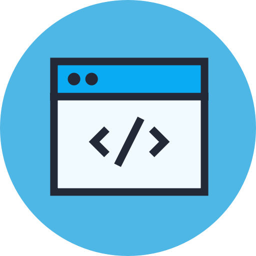

O site

O site tem por objetivo a fixação do aprendizado sobre a construção de páginas web utilizando as linguagens HTML5 e CSS3. Além disso, a página servirá como um Currículo Online para possíveis recrutamentos por empresas da área de TI. Para isso, foi utilizado o terminal Visual Studio Code em sua última versão.
A página apresenta quatro diferentes abas, sendo Home com a apresentação do projeto, Sobre com a história e informaçãoes relevantes sobre Isabella, Cursos com todos os cursos e certificados já conquistados, além da formação acadêmica e Contato com formulário para contato e outros meios de comunicação e redes sociais.
Informações Adicionais 